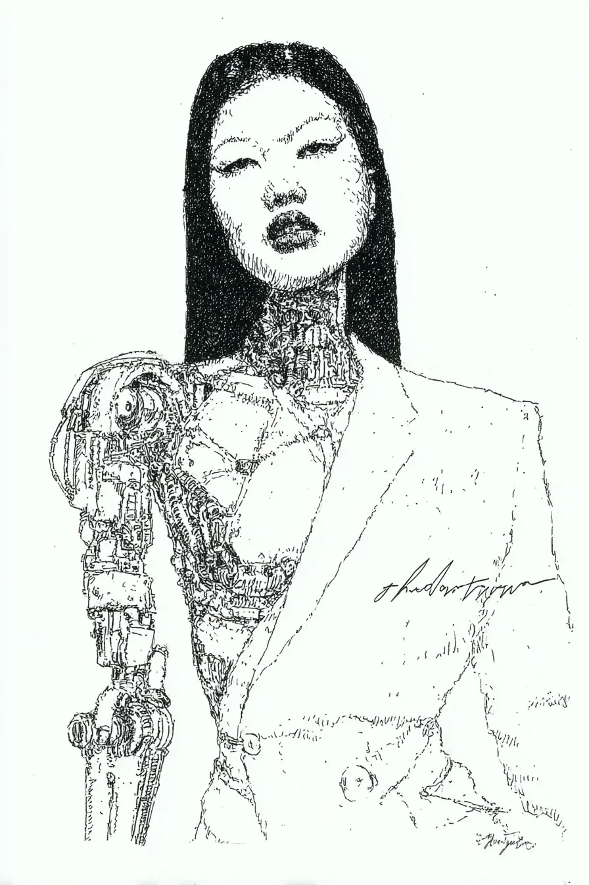

당신의 재킷은 정교하게 재단되어, 목에서부터 가슴 중앙까지 이어지는 은빛 회로의 빛나는 격자무늬를 그대로 드러냈다.\
Your blazer was tailored to frame the glowing lattice of silver circuitry that ran from your neck to the center of your chest.
사람들은 그것을 예술이라 불렀지만, 나는 그 빛의 파동 아래에서 당신의 심장이 뛰는지, 아니면 그저 전력이 흐르는지 알 수 없었다.\
People called it art, but I could never tell if a heart beat beneath that pulsing light, or just the flow of power.
당신은 침묵 속에서 창밖을 응시했는데, 당신의 시선은 허공의 광고판과 데이터 흐름을 훑고 있었다.\
You stared out the window in silence, your gaze tracing the holographic advertisements and data-streams crisscrossing the void.
당신의 팔에서 나는 희미한 윙윙거림과 내 귓속에서 울리는 혈액 소리가 방 안의 유일한 소리였다.\
The low hum from your arm and the rush of my own blood in my ears were the only sounds in the room.
마침내 고개를 돌렸을 때, 당신의 유기적인 눈은 나를 담았지만, 기계 눈의 조리개는 소리를 내며 내 열 신호를 분석했다.\
When you finally turned, your organic eye held my reflection, but the aperture of your optic implant audibly adjusted, analyzing my heat signature.
당신은 한 번에 두 가지 방식으로 나를 보고 있었고, 나는 그중 어느 쪽의 시선에 비친 내 모습이 진짜인지 알 수 없었다.\
You were seeing me in two ways at once, and I had no idea which version of me was real.